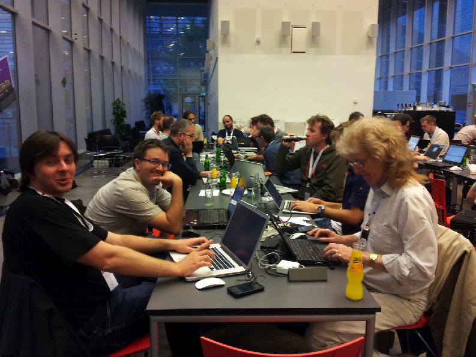

NextGen CI using TeamCity
Evgeny Goldin

@evgeny_goldin
evgeny.goldin@jetbrains.com
TeamCity and YouTrack Evangelist
Builds addict
Open Source developer
Blogger, writer, speaker
evgeny-goldin.com/blog
, GroovyMag, Gr8Conf
You?
NextGen CI?
Continuous Integration
martinfowler.com/articles/continuousIntegration.html
Automated build: compile, test, archive, test.
Build server: cron on steroids + more.
Frequent integration: hourly commits + builds.
Rapid feedback: reporting on builds, tests and inspections.
Frequent releases: makes QA team happy.
No broken builds: build failures get top priority.
Better quality and visibility: project status is transparent.
Did I miss anything?
We Had It All, Yet ..
We Wanted More
Full product build - 4 hours.
It was not clear who does what when builds fail.
E-mail only notifications.
Setting up the system and testing it locally required too many resources.
Builds constantly broke, development often crawled.
Very few new tests were developed.
Code quality could be better.
Was it a people problem or a tool problem?
Enter TeamCity
Java Web UI application
Distributed architecture
Java, .Net, Ruby, Objective-C
All major SCMs, build tools and testing frameworks
Intellij IDEA-based IDEs, Eclipse, Visual Studio
YouTrack, JIRA, FogBugz, GitHub, TFS
REST, JSON, .Net
Artifactory
~ 100 Plugins
Free version
: 20 configurations, 3 agents
NextGen CI for Build Engineers
Real-time reporting.
Investigations.
Muted tests.
Incremental builds. (TC 7.0)
Per checkin builds. (TC 7.0)
Build failure conditions. (TC 7.0)
Mark as successful / failed. (TC 7.1)
NextGen CI for Developers
IDE integration.
Remote run.
Pre-tested commit.
Test history.
Code inspections.
Going Back ..
Full product build - 4 hours
: Incremental builds
It was not clear who does what
: Investigations
E-mail only notifications
: IDE notifications
Setting up the system and testing it locally
: Remote run
Builds constantly broke
: Pre-tested commit, Tests mute, Per checkin builds
Very few new tests
: Build failure conditions can watch tests number drop
Code quality could be better
: Code inspections, Build failure conditions
Try It Yourself!
Free version
: 20 configurations, 3 agents
teamcity.jetbrains.com
teamcity.codebetter.com
evgeny-goldin.org/teamcity
Blog
Forum
@teamcity
@evgeny_goldin
evgeny-goldin.org/presentations/NextGenCI
Q & A
Thank You!
←
→
/
Go to slide:
#